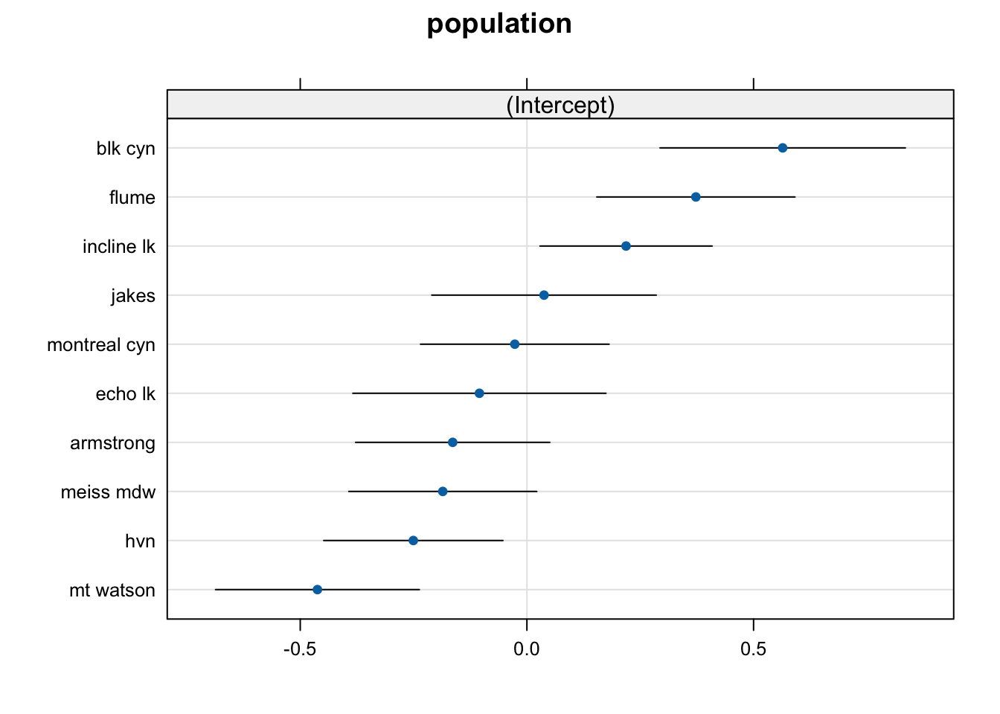

9.3 Worked Example
Andrew Eckert, Katalin Csillery and Helene Wagner
1. Overview of Worked Example
a. Goals
Justification: Natural selection acts on the heritable component of the total phenotypic variation. Traditionally, the heritable proportion of trait variation is estimated using information on the degree of relatedness between individuals. This approach (degree of relatedness) - extensively employed in breeding and evolutionary quantitative genetics – ignores the molecular underpinnings of traits. An alternative approach is scanning genomes using molecular markers to search for so-called outlier loci (see week 11), where selection invoked a change in allele frequencies that is detectable as unusual differentiation between populations in different environments. This approach (outlier loci) – advocated in population genetics - neglects information about the trait variation, but assumes that the markers are in or close to genes that code for adaptive traits. Genetic outliers often hard to interpret because generally we lack information what phenotype they affect and if this phenotype results in fitness differences between populations.
Learning Objectives: This lab was constructed to give you experience in working with basic quantitative and population genetic analyses to test hypotheses about the presence of local adaptation. Similar to the genomic revolution, phenotyping is also undergoing a revolution thanks to developments e.g. in imagery that allow for a highly automated recording of traits; a task that has been extremely time consuming in the past. These developments will certainly advance the quantitative genetic approach in the future in evolutionary biology let alone breeding. By the end of the laboratory, you should be able to do the following:
- Construct, fit, and assess linear mixed effects models (LMMs) to estimate genetic values and variance components of a phenotypic trait measured in families, e.g. in a common garden experiments.
- Use LMMs to estimate the heritability of a trait.
- Test for the presence of unusual trait differentiation among populations relative to differentiation expected in the absence of adaptation
- Assess if trait differentiation is correlated with differentiation in environmental variables to try identifying the selective component of the environment.
b. Data set
The data come from a study of western white pine (Pinus monticola Dougl. ex D. Don) sampled around the Lake Tahoe Basin of California and Nevada. These data consist of 157 trees sampled from 10 populations (n = 9 to 22 trees/population). Within each population, trees were sampled within three plots. For each plot, GPS coordinates were collected (i.e. each plot in each population has its own GPS coordinates) and used to generate a set of 7 environmental variables. From these trees, needle tissue was collected from which total DNA was extracted and genotyped for 164 single nucleotide polymorphisms (SNPs). Seeds were also collected and planted in a common garden. The seedlings (n = 5 to 35/tree) were measured for several phenotypic traits. The phenotypic trait we will be working with today is known as the carbon isotope ratio (\(δ^{13}C\)). It is the ratio of two isotopes of carbon (\(^{13}C\) and \(^{12}C\)) relative to an experimental control, and it is strongly correlated with intrinsic water-use efficiency in plants. Plants need water to live, so it is not a stretch of the imagination to believe that this phenotypic trait has a link with plant fitness.
We will thus have the following data:
- WWP_phenotype_data.txt: Phenotypic measurements for 5 seedlings per tree made in a common garden.
- WWP.ecogen: an
ecogenobject (packageEcoGenetics) with SNP genotypes for all trees sampled in the field, and with environmental data collected from each plot within each population.
c. Required R packages
Install some packages needed for this worked example.
if(!requireNamespace("EcoGenetics", quietly = TRUE))
remotes::install_github("leandroroser/EcoGenetics-devel")
if(!requireNamespace("QstFstComp", quietly = TRUE)) remotes::install_github("kjgilbert/QstFstComp")library(LandGenCourse)
library(lme4)
#require(EcoGenetics)
library(methods)
library(tibble)
#require(lattice)
#require(MuMIn)
#require(predictmeans)
#require(nlme)
#require(QstFstComp)
#require(car) Package ggeffects not automatically installed with LandGenCourse:
Source two files with additional functions:
2. Estimate genetic and non-genetic variance components from a common garden experiment
Motivation: A lot of genetics can be carried out without use of any molecular markers. Practitioners of empirical population genetics forget this quite often. A common garden allows us to create a standardized environment in which we minimize the influence of environment on the expression of a particular phenotypic trait. Phenotypic variation can be partitioned to genetic , environmental and residual components based on quantitative genetic theory. Further, we may also test for the presence of interaction between the genetic and environmental variation. The rationale of a common garden is to “standardize” the environment, thus phenotypic variation we observe is mainly due to genetic variation, even though environmental heterogeneity can never be completely eliminated and we still have to additionally control for it, e.g. using a block design (see below).
Goals & Background: The goal for this part of the laboratory is to construct, fit, and assess LMMs for \(δ^{13}C\). We will be using the data in the file named “WWP_phenotypic_data.txt”. These data are organized in a tab-delimited text file with seedlings grouped by maternal tree (i.e. its mother tree), plot, and population. Also included is an experimental treatment known as “block”. In a common garden, seedlings from the same maternal tree are randomized among blocks to avoid the influence of micro-environmental variation on expression of phenotypic traits.
a. Import phenytypic data
phen <- read.delim(system.file("extdata", "WWP_phenotype_data.txt",
package = "LandGenCourse"), sep = "\t", header = T)
tibble::as_tibble(phen)## # A tibble: 779 × 5
## population plot family block d13c
## <chr> <chr> <int> <int> <dbl>
## 1 blk cyn BC1 59 5 -30.2
## 2 blk cyn BC1 59 2 -29.7
## 3 blk cyn BC1 59 4 -29.6
## 4 blk cyn BC1 59 3 -29.2
## 5 blk cyn BC1 59 1 -29.0
## 6 blk cyn BC1 60 4 -31.2
## 7 blk cyn BC1 60 3 -30.7
## 8 blk cyn BC1 60 1 -30.5
## 9 blk cyn BC1 60 5 -30.1
## 10 blk cyn BC1 60 2 -29.3
## # ℹ 769 more rowsCheck the variable types: family and block have been imported as type “integer”, and we need to convert them to “factor” first.
## population plot family block d13c
## "character" "character" "factor" "factor" "numeric"b. Fit linear mixed effects models (LMM) to trait data observed on families
Now,we are ready to fit a series of linear models. Here we will fit four models in total, though the last two are equivalent for our data:
- mod1: a model with only fixed effects (intercept and block),
- mod2: a LMM with the fixed effects and a random effect due to family, and
- mod3: a LMM where the random effect due to family is nested within population. We will thus be ignoring the variable plot.
- mod4: a LMM where the nesting of family within population is not explicitly specified, it is implied by the data. This model makes sense only if each family has a unique ID, so that there are no families from other populations that have the same ID.
Disclaimer: mod1 is not a valid model because it ignores the pseudo-replication that arises from the hierarchical sampling design. The goal of using random effects (for family, or family and plot), in the other models is to account for this.
Note: d13c ~ 1 + block is equivalent to d13c ~ block (see video, Part 1).
mod1 <- lm(d13c ~ block, data = phen)
mod2 <- lme4::lmer(d13c ~ 1 + (1|family) + block,data = phen, REML = TRUE)
mod3 <- lme4::lmer(d13c ~ 1 + (1|population/family) + block,
data = phen, REML = TRUE)
mod4 <- lme4::lmer(d13c ~ 1 + (1|population) + (1|family) + block,
data = phen, REML = TRUE)Models mod3 and mod4 produce identical results, as long as each family has its own unique ID. In the following, we will use mod4 as it simplifies interpretation (as commonly used in quantitative genetics).
Notice that we are using REML=TRUE, which stands for restricted maximum likelihood. This method is advised for quantitative genetic analysis, because it provides correct (statistically unbiased) estimates of the variance components. The other approach would be to set REML=FALSE, in which case the method used is ML or maximum likelihood. However, ML generally underestimates the residual variance, thus leading to inflated estimates of the family variance and thus the heritability. ML would be needed e.g. to test fixed effects.
c. Compare model fit
Now, let’s explore which model best fits our data. To do this we will use the Akaike Information Criterion (AIC). This statistic scores model fit while giving a penalty for the number of parameters in a model. The model with the lowest score is the preferred model. We will learn more about model selection with AIC (and related measures like AICc, BIC) in Week 12.
How do we ensure that the AIC values of the different models are comparable?
- For
mod1that was fitted with functionlm', we use the functionAIC. - For the other models that were fitted with
lmer, we useextractAIC.
For model comparison purposes, we have to use the ML fit, as AIC is not valid for REML (see video). The function extractAIC refits the models with ‘REML=FALSE’ to obtain AIC values that are comparable between models with different fixed effects (though this does not apply here because the fixed effects were the same), or between models fitted with functions lm and lmer. It returns two values, the first is the “equivalent degrees of freedom” of the fitted model, and the second is the “AIC” value. Here we only extract the second value.
Note: the function extractAIC does not allow to calculate AICc, which is the AIC with small sample correction (see Week 12).
aic_vals <- c(AIC(mod1), extractAIC(mod2)[2], extractAIC(mod3)[2],
extractAIC(mod4)[2])
names(aic_vals) <- c("mod1","mod2","mod3", "mod4")
aic_vals## mod1 mod2 mod3 mod4
## 2120.987 2080.266 2051.207 2051.207Hence, model mod3 (and its equivalent mod4) appears to be the best model. This suggests that there are important differences among populations, and among trees within populations.
We will learn more about model selection later in the course (Week 12).
d. Check model validity
Is the model mod4 valid? Let’s check the residuals (see video!).
The function residplot from package predictmeans produces four diagnostic plots for a model fitted with lmer. The option level indicates which random factor should be plotted (here: 1 = family, 2 = population). This function uses the “conditional” residuals, which represent observed - fitted(fixed) - fitted(random). The option newwd=FALSE specifies that no new window should be created for the plot - this setting is necessary for the knitted R notebook to actually show the figure.
## Warning in checkDepPackageVersion(dep_pkg = "TMB"): Package version inconsistency detected.
## glmmTMB was built with TMB version 1.9.6
## Current TMB version is 1.9.10
## Please re-install glmmTMB from source or restore original 'TMB' package (see '?reinstalling' for more information)Hint: You may need to use the arrow symbols to scroll through the plots in the ‘Plot’ tab in RStudio.
The plots are:
- A normal probability plot of the random effect
family: points should follow line. - A normal probability plot of (conditional) residuals: points should follow line.
- A scatterplot of the (conditional) residuals against fitted values: the plot should not “thicken” (which would indicate differences in variances between groups such as blocks = heteroscedasticity). Due to the option
group = "population", residuals are colored by population. - A plot of fitted values against observed: the scatterplot shows the overall model fit, where points would fall on a line if the model explained 100% of the variation in the response (you can ignore the dashed line).
In addition, we may want to look for outliers and influential points. For this, we create two additional plots. Here we use marginal residuals, which are calculated without accounting for random effects: observed - fitted(fixed).
- A plot of marginal residuals against the fixed effect
block: there should not be any large outliers.
- A plot of Cook’s distances, where D > 1 indicates influential points (more relevant when using quantitative predictors (covariates). Note: this may take a while to calculate.
First we calculate the marginal residuals by predicting values with fixed effects only (re.form=NA) and subtract these fitted values from the observed values.
marginal.residuals <- mod4@frame$d13c - predict(mod4, re.form=NA)
plot(mod4@frame$block, marginal.residuals)

The residual plots did not indicate any major problem. Hence we can proceed with interpreting the results.
Note: As an alternative, the R package DHARMa uses a simulation-based approach to provide residual diagnostics for hierachical (multi-level / mixed) regression models:
https://theoreticalecology.wordpress.com/2016/08/28/dharma-an-r-package-for-residual-diagnostics-of-glmms/
e. Estimate variance components
How much of the variation in \(d^{13}C\)’ is explained by the fixed and random effects? In models fitted with the function lm, we use the \(R^2\) statistics to describe the total variance in the response explained by all the predictors in the model. In a mixed effects modeling context, there is no longer an obvious definition for \(R^2\). Two approximate \(R^2\) statistics have been implemented in the function r.squaredGLMM from the package MuMIn (which stands for multi-model inference):
- R2m: marginal \(R^2\). This is the variance explained by fixed factors.
- R2c: conditional \(R^2\). This is interpreted as the variance explained by both fixed and random factors, i.e., the entire model.
In both statistics, the denominator is a sum of the fixed-effects variance, the random effect variance, and the residual variance.
## Warning: 'r.squaredGLMM' now calculates a revised statistic. See the help page.## R2m R2c
## [1,] 0.02466321 0.2297893The fixed effect block had a small effect of about 2.5%. The total model explained about 23%, most of which was due to the random effects.
How important are the random factors population and family? The summary for mod4 lists the variance components under “Random effects”.
## Linear mixed model fit by REML ['lmerMod']
## Formula: d13c ~ 1 + (1 | population) + (1 | family) + block
## Data: phen
##
## REML criterion at convergence: 2050.4
##
## Scaled residuals:
## Min 1Q Median 3Q Max
## -2.5436 -0.7485 0.0151 0.6028 3.7867
##
## Random effects:
## Groups Name Variance Std.Dev.
## family (Intercept) 0.08164 0.2857
## population (Intercept) 0.10859 0.3295
## Residual 0.71429 0.8452
## Number of obs: 779, groups: family, 157; population, 10
##
## Fixed effects:
## Estimate Std. Error t value
## (Intercept) -30.62635 0.12666 -241.792
## block2 -0.13833 0.09667 -1.431
## block3 -0.35071 0.09520 -3.684
## block4 -0.10060 0.09538 -1.055
## block5 -0.39443 0.09651 -4.087
##
## Correlation of Fixed Effects:
## (Intr) block2 block3 block4
## block2 -0.374
## block3 -0.379 0.498
## block4 -0.378 0.497 0.505
## block5 -0.374 0.492 0.499 0.496Here we extract these variance components from the summary and divide by their sum.
fam.var <- nlme::VarCorr(mod4)$"family"[1]
pop.var <- nlme::VarCorr(mod4)$"population"[1]
res.var <- summary(mod4)$sigma^2
Components <- data.frame(fam.var, pop.var, res.var)
Components / sum(Components)## fam.var pop.var res.var
## 1 0.09026004 0.1200531 0.7896869Compared to Cohen’s (1988) effect sizes, population and family each had a medium-size effect (> 9% variance explained) on d13c values.
f. Significance testing
In quantitative genetics, we are more interested in estimating variance components and the size of effects than in hypothesis testing. In other contexts, however, linear mixed models are often used to test fixed effects while accounting for the random effects. Let’s see how this works.
The confusing part is that we need to fit the model differently to test fixed and random effects (seee video). For testing the random effects, we can use model mod4 that was fitted with REML=TRUE.
The simplest way to test the significance of a random effect is to calculate the model with and without it and use anova() to test whether the more complex model (listed first) explains significantly more than the simpler model. This implements a likelihood ratio test (LR). By default, when used for a model fitted with lmer, anova will refit the models with ML. Here we use the option refit=FALSE to prevent this.
#mod.noPop <- update(mod4, .~. -(1 | population))
mod.noPop <- lmer(d13c ~ 1 + (1 | family) + block, data=phen, REML=TRUE)
mod.noFam <- lmer(d13c ~ 1 + (1 | population) + block, data=phen, REML=TRUE)
anova(mod4, mod.noPop, refit=FALSE)## Data: phen
## Models:
## mod.noPop: d13c ~ 1 + (1 | family) + block
## mod4: d13c ~ 1 + (1 | population) + (1 | family) + block
## npar AIC BIC logLik deviance Chisq Df Pr(>Chisq)
## mod.noPop 7 2097.2 2129.8 -1041.6 2083.2
## mod4 8 2066.4 2103.7 -1025.2 2050.4 32.819 1 1.012e-08 ***
## ---
## Signif. codes: 0 '***' 0.001 '**' 0.01 '*' 0.05 '.' 0.1 ' ' 1## Data: phen
## Models:
## mod.noFam: d13c ~ 1 + (1 | population) + block
## mod4: d13c ~ 1 + (1 | population) + (1 | family) + block
## npar AIC BIC logLik deviance Chisq Df Pr(>Chisq)
## mod.noFam 7 2077.4 2110.0 -1031.7 2063.4
## mod4 8 2066.4 2103.7 -1025.2 2050.4 12.996 1 0.0003122 ***
## ---
## Signif. codes: 0 '***' 0.001 '**' 0.01 '*' 0.05 '.' 0.1 ' ' 1We can do a similar test for the fixed effects (see video). Here we have only one effect. Note that we tell the function anova to refit the model with ML (i.e., REML=FALSE).
mod.noBlock <- lmer(d13c ~ 1 + (1 | population) + (1 | family), data=phen, REML=TRUE)
mod.noFam <- lmer(d13c ~ 1 + (1 | population) + block, data=phen, REML=TRUE)
anova(mod4, mod.noBlock, refit=TRUE, REML=FALSE)## refitting model(s) with ML (instead of REML)## Data: phen
## Models:
## mod.noBlock: d13c ~ 1 + (1 | population) + (1 | family)
## mod4: d13c ~ 1 + (1 | population) + (1 | family) + block
## npar AIC BIC logLik deviance Chisq Df Pr(>Chisq)
## mod.noBlock 4 2067.7 2086.3 -1029.8 2059.7
## mod4 8 2051.2 2088.5 -1017.6 2035.2 24.454 4 6.475e-05 ***
## ---
## Signif. codes: 0 '***' 0.001 '**' 0.01 '*' 0.05 '.' 0.1 ' ' 1The output shows two lines of results, one for each model that was compared. The last column, with the p-value Pr(>Chisq), tells us that model mod4, with the fixed effect block, is statistically significantly better than the simpler model mod.noBlock without the fixed effect block. This means that the block effect is statistically significant at a significance level of alpha = 0.05 (p-value < alpha).
We can also base our interpretation on the AIC: model mod4 has a lower AIC value and is thus considered better than model mod.noBlock. (See Week 12 for an introduction to model selection).
If we have several fixed effects, it may be more convenient to use function Anova from the car package to perform a Wald chi-square test. However, the model must be fitted with ML. Choose between type II and type II sums of squares (see video).
mod4.ML <- lmer(d13c ~ 1 + (1 | population) + (1 | family) + block,
data=phen, REML=FALSE)
car::Anova(mod4.ML, type="II", test.statistic="Chisq")## Analysis of Deviance Table (Type II Wald chisquare tests)
##
## Response: d13c
## Chisq Df Pr(>Chisq)
## block 24.905 4 5.257e-05 ***
## ---
## Signif. codes: 0 '***' 0.001 '**' 0.01 '*' 0.05 '.' 0.1 ' ' 1This will return one line per fixed effect, each with a p-value (Pr(>Chisq)). We see that the block effect is statistically significant at a significance level of alpha = 0.05 (p-value < alpha).
This result suggests that in the common garden experiment, there were differences in d13c among the seeds that are associated with blocks, i.e., the blocks did not provide exactly the same growing conditions. That is why it is so important to repeat all treatments (here: families) within each block, rather than planting the seeds from one family in one block and the seeds from another family in a different block. Because the common garden experiment was properly designed, we can include the variable block in the model to test and account for this effect. We included it as a fixed effect, though if there were six or more blocks, we would include it as a random effect. Either way will work to account for differences between blocks.
3. Estimate trait heritability
Motivation: Now that we have learned how to estimate genetic values for \(δ^{13}C\), let’s learn how to estimate what fraction of the total variation in trait values is due to genetic effects. More precisely, we shall estimate the heritable proportion of the trait variation. Not all genetic effects are transmitted from one generation to the next, but the so-called additive genetic effects (see Week 6 lecture). Here we have data on half-siblings because seeds come from the same mother tree, but their father is most likely different because our species is wind pollinated. In such family structure, the estimation of the additive genetic variance is straightforward because these analyses provide key information about whether or not local adaptation should even be considered. Remember that local adaptation is about genetically determined phenotypes that vary across environments in responses to differing selective pressures. This step allows us to assess how genetic variation for a phenotypic trait is distributed across the landscape.
Goals & Background: The goal for this part of the laboratory is to estimate heritability, trait differentiation, and correlation with environment for trait values determined in Part 1. To do this, we will be using the output from the previous part of the laboratory and the environmental data contained in the file named WWP_environmental_data.txt. As with the phenotype file this is a tab-delimited text file.
a. Estimate heritability
Let’s start with estimating the heritability of \(δ^{13}C\). If you remember from your undergraduate evolution course, heritability refers generally to the proportion of phenotypic variance due to genetic variance. It comes in at least two different versions. The version we are interested in is narrow-sense heritability (\(h^2\)), which is defined as the ratio of additive genetic variance to total phenotypic variance:
\[h^{2} = \frac{\sigma^{2}_{additive}}{\sigma^{2}_{total}}\]
We need to extract the variance components from mod4 for all model terms. We do this visually by printing mod3 to screen or using a set of functions applied to mod4. Here, we will do both.
## Linear mixed model fit by REML ['lmerMod']
## Formula: d13c ~ 1 + (1 | population) + (1 | family) + block
## Data: phen
## REML criterion at convergence: 2050.381
## Random effects:
## Groups Name Std.Dev.
## family (Intercept) 0.2857
## population (Intercept) 0.3295
## Residual 0.8452
## Number of obs: 779, groups: family, 157; population, 10
## Fixed Effects:
## (Intercept) block2 block3 block4 block5
## -30.6263 -0.1383 -0.3507 -0.1006 -0.3944Using the results from above, let’s calculate \(h^2\). If we assume that the seedlings from each maternal tree are half-siblings (i.e. same mom, but each with a different father) then \(σ^2_A = 4 σ^2_{family}\) (so variance due to family). If the seedlings were all full-siblings, then the 4 would be replaced with 2. Let’s assume half-siblings. We can then do the following:
Copying the values visually from the output above (note that we need to square the standard deviations to get the variances):
add_var <- 4*(0.2857^2)
total_wp_var <- (0.2857^2) + (0.3295^2) + (0.8452^2)
h2 <- add_var/total_wp_var
h2## [1] 0.3609476And the same using the variance components from above:
## [1] 0.3610402Question: Inspect your value of \(h^2\). What does it mean?
We have generated a point estimate for \(h^2\). It represents the average \(h^2\) across populations after removing the genetic effects due to population differences. To take this further and also get a SE (so that you can construct a confidence interval), you could check out this R package: https://bioconductor.org/packages/release/bioc/html/GeneticsPed.html
b. Estimate trait differentiation
Great, we have shown that within population genetic variation is statistically greater than zero. What about among population genetic variation? Let’s get to that right now. To measure among population genetic variation we will use a statistic known as \(Q_{ST}\). It is similar in concept to \(F_{ST}\) from population genetics. To estimate \(Q_{ST}\), we will use our LMM output again. If we assume that all seedlings are again half-siblings, then:
\[Q_{ST} = \frac{\sigma^{2}_{population}} {\sigma^{2}_{population}+8\sigma^{2}_{family}}\]
Again, we can do this by copying the values visually from the output:
## [1] 0.1425618Or using the variance components from above:
num_qst <- Components$prov.var
dem_qst <- Components$prov.var + (8*Components$fam.var)
qst <- num_qst/dem_qst
qst## numeric(0)Question: Inspect your ‘qst’ value:
- What does it mean?
- Look at the quantities in the equation above, what is the denominator equal to? Is it the total phenotypic variance or the total genetic variance?
4. Compare \(Q_{st}\) to \(F_{st}\) measured from SNP data
If you want to learn more about analyzing SNP data in R, here are some resources:
- adegenet SNP tutorial: http://adegenet.r-forge.r-project.org/files/tutorial-genomics.pdf
- popgen.nescent.org (click on ‘Users’ tab): http://popgen.nescent.org/
a. Import ‘ecogen’ object
Load the data set ‘WWP.ecogen’.
This ‘ecogen’ object has information in the following slots:
- XY: data frame with spatial coordinates (here: longitude, latitude)
- P: data frame with phenotypic traits (here: intercept, family effects and population effects from mod4)
- G: data frame with genotypic data (here: 164 SNPs)
- A: generated automatically from G: matrix of allele counts (codominant markers only)
- E: data frame with environmental data (here: 7 bioclimatic site variables)
- S: data frame with structure (hierarchical sampling levels)
b. Compare \(Q_{ST}\) to \(F_{ST}\)
See ‘Week 6 Bonus Material’ for calculating Fst from the SNP data.
Here, we will use the QstFstComp package to formally test whether or not \(Q_{ST} > F_{ST}\) for \(δ^{13}C\). The function QstFstComp from the package with the same name calculates both \(Q_{ST}\) and \(F_{ST}\) itself, then tests whether they are different from each other.
Note: as this is a permutation test, if you run it several times, the results may change slightly from run to run.
First, however, we need to re-format the data to the format that QstFstComp expects. This is easy with the function ecogen2hierfstat.
WWP.hierfstat <- EcoGenetics::ecogen2hierfstat(WWP.ecogen, pop='population',
to_numeric=TRUE, nout=1)
phen_mod <- phen[,-c(2,4)]
QstFst_out <- QstFstComp::QstFstComp(fst.dat = WWP.hierfstat,
qst.dat = phen_mod,
numpops = nlevels(WWP@S$population),
nsim = 10000,
breeding.design = "half.sib.dam",
dam.offspring.relatedness = 0.25,
output = "concise_nowrite")## [1] "No output file of Q minus F values written."## [[1]]
## Calculated Qst-Fst Lower Bound crit. value.2.5%
## 0.11917632 -0.02717074
## Upper bound crit. value.97.5%
## 0.06354485
##
## [[2]]
## [1] "Qst-Fst values output to file: /Users/helene/Desktop/R_Github_projects/LandGenCourse_book/vignettes/QminusFvalues_2024-01-25_05-16-23.802224.txt"
##
## [[3]]
## Lower one-tailed p value Upper one-tailed p value Two-tailed p value
## 0.9923 0.0077 0.0154
##
## [[4]]
## Estimated Fst Lower Bound CI.2.5% Upper bound CI.97.5%
## 0.01419871 0.01113645 0.01745797
##
## [[5]]
## Estimated Qst Lower Bound CI.2.5% Upper bound CI.97.5%
## 0.1333750 0.0265540 0.3742151
##
## [[6]]
## Va Lower bound CI.2.5% Upper bound CI.97.5%
## 0.3180848 0.1087902 0.5487714The output contains the following elements:
[[1]]: The calculated difference between Qst and Fst, with 95% critical values of the distribution of the distribution under the null hypothesis of no difference.[[2]]: an output file name (though we suppressed the writing of this file with the optionoutput="consise_nowrite")[[3]]: p-values for a hypothesis test with H0: \(Q_{ST} = F_{ST}\), with three different alternatives (less,greater,two.sided)[[4]]: the Fst value estimated from the data with 95% confidence intervals.[[5]]: the Qst value estimated from the data with 95% confidence intervals.[[6]]: the additive genetic variance for the trait with 95% confidence intervals.
Note: the values are somewhat different from what we calculated, most likely because the function QstFstComp did not account for the block effect.
Questions: Inspect the first and third elements of the list QstFst_out:
- For the observed values, is \(Q_{ST} > F_{ST}\)?
- Which alternative is most appropriate here?
- Can the null hypothesis be rejected with alpha = 0.05?
- What does this mean biologically?
5. Assess correlation between trait and environment
Motivation: Similar to the fixed effects, estimates of the random effects can be also extracted from a mixed effects model and used in further analysis. Such estimates are called Best Linear Unbiased Predictions or BLUPs. They are technically predictions because when you fit a mixed effects model, initially only the mean and variance of the random effects are estimated. Then, the random effects or BLUPs for a given experimental unit (e.g., population or family) can be “predicted” from the estimated mean and variance (and the data).
Goals and background: Here we will extract block, population and family effects from the model. Then we will correlate the plot-level bioclimatic data with the population effects to see if population differences in seedling d13C trait can be explained by the environment at the site where the mother tree stands. The underlying idea is to look if selection has made the population different.
a. Describe and extract effects
Which blocks, populations or trees had higher mean d13c values than others? To answer this question, we extract and plot the fixed and random effects. We’ll start with the fixed effect for block.
The effects are not simply the mean of all seedlings from the same block, but the marginal effect of block`, i.e., estimates of the mean per block after accounting for all other effects (i.e., keeping population and family constant).
There are two ways to extract the block effects. The first is with function fixef. This treats the first level of block as a reference level and uses it to estimate the global intercept, then expresses the effect of the other blocks as deviations from the first block.
## (Intercept) block2 block3 block4 block5
## -30.6263478 -0.1383311 -0.3507053 -0.1006031 -0.3944314A more convenient way to extract the effects is with function ggeffect of the package ggeffects.
## # Predicted values of d13c
##
## block | Predicted | 95% CI
## ------------------------------------
## 1 | -30.63 | [-30.87, -30.38]
## 2 | -30.76 | [-31.01, -30.51]
## 3 | -30.98 | [-31.23, -30.73]
## 4 | -30.73 | [-30.98, -30.48]
## 5 | -31.02 | [-31.27, -30.77]The table lists the predicted d13c value for each block (accounting for population and family) and a 95% confidence interval for each predicted value.
Now let’s plot the effects (mean with 95% confidence interval) for each random factor, accounting for all other factors. Again, these are not simply means of observed traits values but marginal effect, accounting for all other factors in the model.
Note: If the plots appear in the “Plot” tab in RStudio, use the arrows to scroll between plots.
## $family
##
## $population
We can see that there are considerable differences between populations, where “blk cyn” has the highest, and “mt watson” the lowest mean.
We can extract the values with ranef. Again, they are deviations from the global intercept (block 1). We are now ready to correlate the population effect to the environmental data.
## (Intercept)
## armstrong -0.16372457
## blk cyn 0.56424812
## echo lk -0.10480714
## flume 0.37270696
## hvn -0.25055204
## incline lk 0.21873458
## jakes 0.03776884
## meiss mdw -0.18557714
## montreal cyn -0.02673127
## mt watson -0.46206634## (Intercept)
## 59 0.269660618
## 60 -0.036688490
## 61 -0.007035082
## 63 -0.259031610
## 64 0.087029419
## 65 -0.168188771b. Correlation of population effect with environment
We have population effects estimated for 10 populations, and bioclimatic data for 30 plots (3 plots x 10 populations). If we used all 157 rows of the site data set, this would inflate our sample size. To avoid this, we first extract 30 unique rows (one per plot) from the site data WWP.ecogen@E. Then we use match to find for each plot the corresponding population. This returns the row number (index) and we use it to extract the corresponding population effect.
Plot.data <- dplyr::distinct(data.frame(WWP.ecogen@E,
population=WWP.ecogen@S$population))
index <- match(Plot.data$population, row.names(prov.eff))
dat2 <- data.frame(prov.eff=prov.eff[index,1], Plot.data[,-8])Now we estimate the correlation between the population effect and each bioclimatic variable. We summarize the results in a correlation matrix plot.
## Warning in par(usr): argument 1 does not name a graphical parameter
## Warning in par(usr): argument 1 does not name a graphical parameter
## Warning in par(usr): argument 1 does not name a graphical parameter
## Warning in par(usr): argument 1 does not name a graphical parameter
## Warning in par(usr): argument 1 does not name a graphical parameter
## Warning in par(usr): argument 1 does not name a graphical parameter
## Warning in par(usr): argument 1 does not name a graphical parameter
## Warning in par(usr): argument 1 does not name a graphical parameter
## Warning in par(usr): argument 1 does not name a graphical parameter
## Warning in par(usr): argument 1 does not name a graphical parameter
## Warning in par(usr): argument 1 does not name a graphical parameter
## Warning in par(usr): argument 1 does not name a graphical parameter
## Warning in par(usr): argument 1 does not name a graphical parameter
## Warning in par(usr): argument 1 does not name a graphical parameter
## Warning in par(usr): argument 1 does not name a graphical parameter
## Warning in par(usr): argument 1 does not name a graphical parameter
## Warning in par(usr): argument 1 does not name a graphical parameter
## Warning in par(usr): argument 1 does not name a graphical parameter
## Warning in par(usr): argument 1 does not name a graphical parameter
## Warning in par(usr): argument 1 does not name a graphical parameter
## Warning in par(usr): argument 1 does not name a graphical parameter
## Warning in par(usr): argument 1 does not name a graphical parameter
## Warning in par(usr): argument 1 does not name a graphical parameter
## Warning in par(usr): argument 1 does not name a graphical parameter
## Warning in par(usr): argument 1 does not name a graphical parameter
## Warning in par(usr): argument 1 does not name a graphical parameter
## Warning in par(usr): argument 1 does not name a graphical parameter
## Warning in par(usr): argument 1 does not name a graphical parameter
## Warning in par(usr): argument 1 does not name a graphical parameter
## Warning in par(usr): argument 1 does not name a graphical parameter
## Warning in par(usr): argument 1 does not name a graphical parameter
## Warning in par(usr): argument 1 does not name a graphical parameter
## Warning in par(usr): argument 1 does not name a graphical parameter
## Warning in par(usr): argument 1 does not name a graphical parameter
## Warning in par(usr): argument 1 does not name a graphical parameter
## Warning in par(usr): argument 1 does not name a graphical parameterHow to read this plot:
- Each diagonal cell shows the name and histogram of one variable.
- Each cell in the upper triangle shows the correlation coefficient r, and the p-value for the correlation, between the two variables that define the corresponding row and column. (A larger font indicates a stronger correlation, though this seems to be inconsistent).
- Each cell in the lower triangle shows a scatterplot of the two variables that define the corresponding row and column. A smooth regression line is shown in red.
Questions:
- Which site variables show the strongest correlation with the population effect?
- Which site variables are significantly correlated with the population effect?
- OVerall, does the population effect appear to be related to the environment?